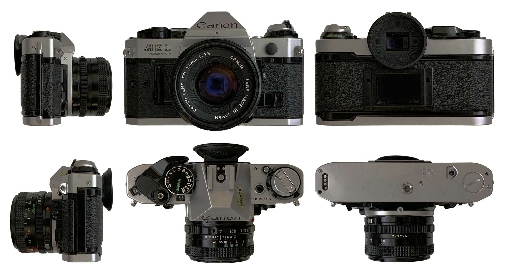

WebGL Turntables
Nachbau eines Plattenspielers für eine Echtzeit-3D-Anwendung mit Three.JS
MischiFischi App
Mit React Native entwickelte App zum Erstellen eigener Fisch-Grafiken
Timetracker
In Java geschriebene Software zur projektbasierten Zeiterfassung (Prototyp)
Codex Code-Plattform
Mit Node.js entwickelte Web-Plattform zum Austausch von Code-Snippets
Data Mining Cup 2022
(Platz 16)
Kaufvorhersage auf Grundlage einer Bestellhistorie
| Projekt: | Point & Click Adventure |
|---|---|
| Kurs: | Media/Game Design 2 |
| Semester: | 2 (Media Systems, HAW Hamburg) |
| Engine: | Adventure Studio (v.3.5.0) |
| Hauptaufgaben: | Leveldesign, Development |
| Mitwirkende: | Soe Ö., Dana H., Mursal D. |
Im Rahmen des Kurses Media/Game Design 2, in dem einführende Elemente des Game Designs behandelt
wurden, war das Hauptziel einen spielbaren, kleinen Game-Prototypen umzusetzen. Die Game Engine
konnte dafür frei gewählt werden.
Im Fokus der Kursarbeit stand der übergreifende Spieleentwicklungsprozess im Fokus: Von der Ideen-
und Teamfindung hin zur Aufwandsschätzung, dem Erarbeiten eines Grobkonzepts und schließlich der
Umsetzung des Vorhabens.
Das Produkt des Kurses ist Finding a Home: Der Prototyp zu einem Point-and-Click-Adventure in
Pixel-Art, das die Zukunfts-Geschichte eines Menschen erzählt, der aufgrund des unbewohnbaren
Zustands der Erde ein neues Zuhause im Universum sucht und auf seiner Reise diverse Abenteuer erlebt.
Zur Realisierung des Prototyps wurden diverse frei erhältliche Game-Assets und Sounds verwendet.
| Projekt: | 2D Pixel-Art-Sidescroller |
|---|---|
| Kurs: | Media/Game Design 3 |
| Semester: | 3 (Media Systems, HAW Hamburg) |
| Engine: | Unity 2021.1.6f1 (C#) |
| Hauptaufgaben: | HUD Design, Development-Support |
| Mitwirkende: | Moritz U., Paul S. |
Die Spieleprojekte aus dem vorherigen Kurs sollten in Media/Game Design 3 deutlich weiterentwickelt werden. Dafür wurden theoretische Inhalte vertieft, die in der Umsetzung dann Anwendung finden sollten. So lag der Fokus der Projektarbeit in der Weiterentwicklung und damit auch auf intensiveren Testing und Polishing.
Der Prototyp Wrath of Tiny Knight, einem 2D-Sidescroller in Pixel-Art-Optik, in dem ein kleiner Ritter
mit Jump'n'Run-Manövern sowie einem einfachen Kampfsystem durch eine eher düstere, mittelalterliche Spielwelt
gesteuert wird, wurde bereits in Media/Game Design 2 von Moritz U. und Paul S. maßgeblich entwickelt.
Da die Grundmechaniken sowie das Leveldesign bereits sehr fortgeschritten waren, ging es nun vor allem darum,
Feedback-Mechaniken, User Interfaces, neue Gegnertypen, Sounds und weitere kleine Verbesserungen einzuarbeiten,
die zu einem runderen Spielerlebnis führen.
Am Ende kam ein spielbarer Prototyp heraus, der zwar nicht gänzlich fehlerfrei ist, aber insgesamt schon ein gutes
Spielgefühl vermittelt und Spielidee, Mechanics, den Core Gameplay Loop sowie die Game Design Pillars transportiert.
| Aktion | Controller (Xbox) | Controller (PS4) | Keyboard & Mouse |
|---|---|---|---|
| Laufen | Linker Joystick X-Achse | Linker Joystick X-Achse | A, D |
| Ducken | Linker Joystick Y-Achse (-) | Linker Joystick Y-Achse (-) | S |
| Springen | A | × | Space |
| Attack | X | ◻ | Left Mouse |
| Health Potion | B | ○ | E |
| Activate Power | Y | △ | Right Mouse |
Ein kleiner Ritter kämpft sich durch die Welt und räumt alles, was sich ihm in den Weg stellt, konsequent aus dem Weg.
Doch wie lautet sein Name? Und wofür kämpft er überhaupt? Das weiß bislang niemand!
Doch eines steht fest: Sein Zorn hat einen Grund und Tiny Knight wird gnadenlos weiterkämpfen, bis er erreicht hat, wonach er strebt…
Das Spiel verrät zunächst wenig über die Beweggründe des Helden, der sich der feindlichen
Übermacht stellt. Die Story, die in einer mittelalterlichen Welt spielt, wird nicht näher beleuchtet. Das Gameplay, auf dem
der Fokus liegt, führt die Spielenden durch ein Karussell der Emotionen aus Spannung, Frust und Euphorie.
Spielregeln
Der Character muss durch die einzelnen Level gesteuert werden, um zum Ausgang des Ziels zu gelangen. Dabei können auftretende
Hindernisse bekämpft oder umgangen werden.
Der Character besitzt eine Health-Bar, die bei gegnerischen Treffern und Verletzungen Schaden nimmt. Mit vollständiger Entleerung
der Health-Bar stirbt der Character und das Spiel muss vom Anfang des Levels neu aufgenommen werden.
Die verschiedenen Bewegungsmöglichkeiten des Characters, die einsetzbaren Waffen sowie die im Level versteckten Collectables
unterstützen beim Bezwingen der sich in den Weg stellenden Hindernisse.
Character/Enemies, Objekte und Umgebung im eher entsättigten 2D-Pixel-Art-Look wurden aus diversen externen Quellen zusammengestellt.
Mit genauem Blick wird erkenntlich, dass nicht mit einer einheitlichen Pixel-Größe für Sprites und Tilemaps gearbeitet wurde,
trotzdem wurde darauf Wert gelegt, dass alles möglichst gut zusammenpasst. Unterstützt wird das Zusammenspiel der Assets durch
Farbanpassungen und gesetzte Lichtquellen.
Die verwendeten Assets sind also vor allem eine kuratierte Sammlung aus frei verfügbarem Material, das teilweise aber auch abgeändert
oder neu kombiniert wurde, um den gewünschten Anforderungen zu entsprechen oder eigene Animationen zu entwickeln.
Das User Interface (Start- und Pausemenü) sowie das Graphic User Interface (im Spiel angezeigtes Inventar, aktuelle Waffe, Info-Bars etc.)
wurden selbst entwickelt unter Verwendung der im Level eingesetzten Sprites wie der Potion oder dem Character-Sprite.
Beim Sound wurde ebenfalls auf frei verfügbares Material gesetzt. So sind Feedback-Sounds/Sound-Effekte weitestgehend realistische
Foley-Sounds aus externen Quellen, teilweise fanden aber auch eigene SFX-Aufnahmen (Tiny Knight Sounds) statt.
Der Soundtrack, der das Level begleitet, wurde selbst von Paul S. komponiert und produziert.
Entsprechend des mittelalterlichen Hauptcharakters spielt sich das Geschehen in einer mittelalterlichen, düsteren Umgebung ab, die aus Wäldern, Wiesen, Seen, Burgen und Verliesen besteht.
Die Gegner sowie deren Angriffe bzw. Waffen sind dem Setting angepasst und so trifft man beim Durchlaufen des Levels vor allem auf Ritter in schwerer Rüstung und starken Waffen (Heavy Bandits), aber auch auf Gegner, die aus der Luft angreifen (Flying Bat) oder Bogenschützen (Archer), die aus der Distanz feuern können.
Dabei ist die Umgebung so angelegt, dass die Bewegungsmöglichkeiten geschickt eingesetzt werden müssen, um Abgründe zu überwinden, neue Bereiche zu ergründen oder Gegner auszuweichen, mit denen eine Konfrontation manchmal aber auch unumgänglich ist und sogar von Vorteil sein kann (z.B. zum Auffüllen der Special Ability oder Erreichen neuer Health Potions).
Heavy Bandit
Patrouilliert auf fest abgesteckten Bereichen und greift den Tiny Knight mit schweren Schwerthieben an, sobald dieser sich nah genug heranwagt.
Folgt dem Tiny Knight auf kleineren Distanzen, lässt sich aber schnell abschütteln.
Flying Bat
Fliegt auf der Stelle und scheint zunächst harmlos. Greift an, sobald sich der Tiny Knight in einem bestimmten Radius befindet und verfolgt diesen solange, bis er verletzt wurde.
Nach einer Attacke wartet die Fledermaus auf einer neuen Position. Greift von oben an und kann manchmal schwer zu erreichen sein, ist aber nicht sonderlich stark.
Archer
Kann Pfeile auf weite Distanz und in relativ hoher Geschwindigkeit abfeuern. Ist im Nahkampf nicht besonder ausgestattet.
| Projekt: | 3D Modellierung mit Blender |
|---|---|
| Kurs: | Computergrafik und -Animation |
| Semester: | 4 (Media Systems, HAW Hamburg) |
| Software: | Blender (2.93.6) |
Die erlernten Grundlagen von Blender, die uns Studierenden im Kurs Computergrafik und -Animation nähergebracht wurden, sollten zum Abschluss angewendet werden, um ein Objekt unserer Wahl zu modellieren. Mindestvoraussetzung war, dass das später modellierte Objekt aus wenigstens zehn Einzelteilen besteht und mit Materialien sowie Texturen versehen ist.
Als Vorlage diente eine Canon AE-1 Program Spiegelreflexkamera, die zunächst von allen Seiten abfotografiert wurde.

Herausgekommen ist ein High-Poly-Model aus 81 Objekten mit insgesamt ~5.95 Mio. Faces (5 555 526
Vertices, 11 510 354 Edges, 11 909 630 Triangles).
Die Texturen für die unterschiedlichen Materialien stammen größtenteils aus externen Quellen,
Aufdrucke/Labels (inkl. Bump- bzw. Normal-Maps) wurden in Adobe Illustrator & Adobe Photoshop
selbst nachgebaut.
| Projekt: | Echtzeit-3D-Anwendung mit Three.JS |
|---|---|
| Kurs: | Computergrafik und -Animation |
| Semester: | 4 (Media Systems, HAW Hamburg) |
| Sprachen: | JavaScript (Three.js), HTML |
Für die Prüfungsleistung sollte eine Echtzeit-3D-Anwendung mithilfe der JavaScript Bibliothek
Three.js entwickelt werden.
Hierfür sollte ein geladenes 3D-Modell mit einfachen Grundkörpern und den Möglichkeiten, die
Three.js mit sich bringt, nachgebaut werden. Dieser Nachbau sollte aus mind. zehn Einzelteilen
bestehen, sich mit Mausklicks (Raycasting) steuern lassen und durch diese Interaktion Animationen
ausführen. Diese Interaktion sollte dann auch für das geladene Modell adaptiert werden, wobei
freigestellt war, ob die Animationen händisch oder mit externer Software direkt an das Modell
gebunden werden.
Sämtliche in der Szene platzierten Objekte sollten außerdem physikalischen Kräften unterliegen
(Cannon.es) und miteinander kollidieren können. Zur Demonstration sollten die in der Vorlesung
gezeigte Möglichkeit zum Werfen physikalischer Bälle implementiert werden.
Zur Realisierung durften ausschließlich die in der Vorlesung genutzten Bibliotheken verwendet werden,
die über dieselben Pfade wie in den Kursbeispielen geladen werden sollen.
Darunter:
Hauptbestandteil des hier realisierten Demonstrators ist der (rechte) Plattenspieler, welcher auf Grundlage des linken
von einer externen Quelle stammenden Plattenspielers entstanden ist und als Vorlage für den rechts stehenden Nachbau mit
Grundkörpern und Extrusionen diente.
Bei der Originaldatei des geladenen Plattenspielers handelte es sich um eine FBX-Datei, die mithilfe der Software
Blender in das geforderte GLTF exportiert wurde. In diesem Zuge wurden die Texturen sowie Farbgebungen leicht angepasst
und Animationen erstellt. Die Geometrien selbst blieben unverändert.
Die (angepassten) Texturen des geladenen Plattenspielers wurden im Großen und Ganzen ebenfalls für den Nachbau in
Three.js verwendet.
Für ein stimmigeres Gesamtbild der Szene wurden die Plattenspieler zusammen mit zwei Lautsprechern auf einem Möbelstück platziert.
Diese Modelle stammen ebenfalls aus einer externen Quelle, wurden nur minimal korrigiert und wie die Vorlage des
Plattenspielers als GLTF in die Three.js-Szene geladen.
Beide Plattenspieler können durch Mausklicks (linke Maustaste) oder Tap gesteuert werden.
Dabei sind folgende Aktionen möglich:
Läuft der Plattenspieler (Drehscheibe mit Platte drehen sich) und befindet sich der Arm (mit Nadel) auf der
Schallplatte, wird Musik abgespielt. Beide Plattenspieler spielen unabhängig voneinander Musik ab.
Ist die Musik zuende, die Nadel aber weiterhin auf der Schallplatte und dreht sich die Scheibe weiterhin, hört man
die Platte rauschen/knacken.
Die Abspielgeschwindigkeit des Sounds kann verändert werden, die sichtbare Drehgeschwindigkeit bleibt dieselbe.
Die Lautsprecher geben die von den Plattenspielern abgespielte Musik wieder. Sie sind mit "Positional Audio" so eingestellt, dass der gut hörbare Bereich auch vor diesen Lautsprechern liegt.Bewegt sich die Kamera hinter die Lautsprecher oder sehr weit von diesen weg, nimmt die Lautstärke der Sounds ab.
Physik
Die Szene und die sich darin befindenden Objekte sind mit physikalischen Eigenschaften ausgestattet (Schwerkraft und
Masse). Um Kollisionen zu verursachen können mit einem Klick auf die Leertaste Tennisbälle geschossen werden.
Die Flugrichtung der Tennisbälle orientiert sich ausgehend von der Kamera an der aktuellen Mauszeigerposition, wodurch
grob gezielt werden kann.
Light Color & Light Intensity
Das Lichtsetting lässt sich mit dem sich am rechten oberen Rand befindlichen Graphic User Interface einstellen.
Die Position der Lichtquellen ist dabei fest, je ein Spotlight verfolgt aber einen der Plattenspieler.
Die Lichtstimmung kann über die Intensität der vorhandenen Lichtquellen sowie die Farbgebung (getrennte RGB-Werte, wobei
die Werte 0-1 in dem GUI die RGB-Werte von 0-255 abbilden.
General
Über die Buttons im Bereich "General" lassen sich die Positionen der Objekte zurücksetzen, geschossene Tennisbälle
wieder entfernen (z.B. bei Performance-Einbrüchen) und die Objekte als Wireframe anzeigen (entweder alle oder nur den
nachgebauten Plattenspieler).
Der Taste "Stop Aud&Anim" stoppt alle laufenden Tweens und pausiert laufende Audiospuren.
| Projekt: | Fisch-Creator-App mit Projektionsanbindung |
|---|---|
| Kurs: | Mobile Systeme |
| Semester: | 5 (Media Systems, HAW Hamburg) |
| Sprachen: | JavaScript (React Native Framework) |
| Mitwirkende: | Anastasia E., Moritz U. |
Das ursprüngliche Vorhaben des Kurses Mobile Systeme (Wahlpflichtfach im Studiengang Media Systems; auch MOSY genannt)
im Sommersemester 2022 war es, für eine Ausstellung am Department Medientechnik der Hochschule für Angewandte Wissenschaften zusammen
mit dem Kurs IT-Systeme (Pflichtmodul im Studiengang Medientechnik; auch ITS genannt) eine Ausstellung zu einem Thema
der Sustainable Development Goals zu realisieren.
Der Kurs IT-Systeme, in dessen Verantwortung die Organisation und Umsetzung der medientechnischen Ausstellung lag, hat sich dabei auf
das Thema LIFE BELOW WATER: Conserve and sustainably use the oceans, seas and marine resources for sustainable development
geeinigt.
Hierzu sollten medientechnische Installationen bspw. mit Projektoren, Beschallungsanlagen, Motoren etc. umgesetzt werden, die durch
Anwendungen des Kurses Mobile Systeme interaktiv gesteuert werden können sollten. Als Steuerzentrale der Ausstellungstechnik diente die
knotenbasierte Software und Entwicklungsumgebung TouchDesigner der Firma Derivative, die vom ITS-Kurs verwaltet wird und gleichzeitig
die Schnittstelle für die Interaktion zwischen mobiler Anwendung und IT-System darstellt.
Unser Team des MOSY-Kurses hat sich mit einer der zwei Gruppen des ITS-Kurses zusammengetan, um eine Projektionsfläche zu bespielen.
Die Aufgabe war es, ein mobiles System zu entwickeln, das mit der vom ITS-Team bereitgestellten Projektion interagieren bzw. diese
beeinflussen kann.
Unter der thematischen Grundidee ein Bewusstsein zum Erhalt der Artenvielfalt in Ozeanen schaffen, wollten wir eine App entwickeln,
in der sich mithilfe eines Baukastensystems eigene Fische aus vorgefertigten „Fisch-Bausteinen“ erstellen lassen. Diese sollten dann
von der App an eine Projektion (mit dem TouchDesigner als Schnittstelle) oder an einen Bildschirm gesendet werden können und dort gemäß
der Idee wie in einem „digitalen Ozean“ herumschwimmen.
Die App sollte mit dem Command Line Interface Expo und dem Framework React Native umgesetzt,
das Projekt an sich mit Scrum (Vorgehensmodell) geplant und bearbeitet werden.
In drei je dreiwöchigen Sprints ist eine App für iOS und Android entstanden, die (aufgrund der strengen Restriktionen seitens der
App-Stores) nur über Expo zugänglich gemacht wurde.
Mittels eines Baukastensystems und unterschiedlichen Bestandteilen wie Farben, Mustern und Formen kann ein selbst gestalteter Fisch
erstellt, exportiert und (zum Zeitpunkt der Ausstellung) an die Projektion gesendet werden.
Außerdem kann zusätzlich ein Text versendet werden, der Lösungsvorschläge zum Erreichen der Nachhaltigkeitsziele beinhaltet, welcher
ebenfalls innerhalb der Projektion dargestellt wird.
Die Anwendung beinhaltet zwei Hauptbereiche: Den Build-Screen und den Collection-Screen.
Im Build-Screen kann aus den verschiedenen Bausteinen ein eigener Fisch erstellt werden, im Collection-Screen finden sich alle Fische,
die bisher erstellt wurden, und konnten hierüber an die Ausstellungsprojektion gesendet werden. Der Build-Screen beinhaltet außerdem die
Möglichkeit, den aktuell bearbeiteten Fisch in die Foto-Bibliothek des Smartphones zu exportieren.
Die Anbindung an die Ausstellungsprojektion erfolgte über einen Websocket, der sich mit dem im lokalen HAW-Netzwerk befindlichen
TouchDesigner-Server verbunden hat.
Um flexibel in der Websocket-Adresse bleiben und bei Bedarf auch noch kurz vor oder sogar während der Ausstellung die
Websocket-Adresse anpassen zu können, wurde außerdem ein externer Webserver aufgesetzt, über den die IP-Adresse manuell jederzeit geändert
werden kann. Die Anwendung verbindet sich bei jedem Aufruf des Collection-Screens mit diesem Webserver, um die aktuelle Adresse
abzurufen und bei Bedarf zu ändern.
Über den Websocket wird ein JSON, das eine UUID, den Text und den erstellten Fisch als SVG beinhaltet, an den TouchDesigner übermittelt, dessen
Programmierung vom ITS-Team vorgenommen wurde, um die übermittelten Fische schließlich auf einer ozeanähnlichen Projektion darzustellen.
| Projekt: | Software zur projektbasierten Zeiterfassung |
|---|---|
| Kurs: | Software Engineering |
| Semester: | 4 (Media Systems, HAW Hamburg) |
| Sprachen: | Java, SQL |
| Mitwirkende: | Kevin K., Moritz U., Paul S., Sven M. |
Im Zuge des Kurses Software Engineering wurde anhand einer Fallstudie zur Analyse, Planung und Umsetzung von Software das nachfolgende Projekt umgesetzt. Die Kursinhalte fokussierten sich auf den Prozess des Software Engineerings, der anhand einer selbstgewählten Aufgabe komplett durchlaufen werden sollte.
Die Zielsetzung unseres fünfköpfigen Teams war eine möglichst plattformunabhängige
(Windows, MacOs, Linux) Software zum Erfassen von projektbasierter Arbeitszeit (mit Fokus auf
Freelancer).
Mit diesem übergeordneten Vorhaben wurden die Anforderungsanalyse betrieben, das Vorgehensmodell
ausgewählt, die Software geplant (Architektur, Software-Pattern, Datenbankstruktur) und schließlich
umgesetzt (nach priorisierten Features) sowie getestet.
Vorgegangen wurde mit dem Scrumban-Modell, das aufgrund der knappen Zeit für
unsere Zwecke leicht angepasst wurde.
| Projekt: | Modellentwicklung zur Vorhersage von Käufen |
|---|---|
| Kurs: | Adaptive Systems and Artificial Intelligence |
| Semester: | 5 (Media Systems, HAW Hamburg) |
| Software, Sprachen: | KNIME, Python (Jupyter Notebook) |
| Mitwirkende: | Kevin K., Moritz U. |
Der seit 2002 jährlich stattfindende Data Mining Cup (DMC) wurde von der prudsys AG ins Leben
gerufen und wird seitdem von ihr ausgerichtet. Es handelt sich um einen internationalen Wettbewerb,
an dem je zwei Teams einer Bildungseinrichtung teilnehmen können. Ziel des DMC ist es, die
teilnehmenden Studierenden herauszufordern, die bestmögliche Lösung für ein Data Mining Problem
zu erarbeiten, wobei sich die Aufgaben auf reale und praxisorientierte Probleme fokussieren.
Die Teilnahme am Data Mining Cup durch unser HAW-Team fand im Rahmen des Kurses Adaptive Systems
and Artificial Intelligence statt, mit dem wir das erste Mal mit den groben Grundlagen von
Data Science und Machine Learning in Berührung kamen.
Ein Online-Handel mit Gütern des alltäglichen Gebrauchs versendet regelmäßig Newsletter, um
seine Produkte zu bewerben. Diese Werbemaßnahme ist personalisiert und beinhaltet so auf
die Empfänger zugeschnittene Empfehlungen.
Das Problem: Oft werden werden in diesen Newslettern Produkte beworben, die von den Empfängern
gerade erst gekauft wurden und damit für einen bestimmten Zeitraum irrelevant sind.
Statt Produkte für eine fixe Anzahl an Tagen für Empfehlungen zu sperren, möchte der
Online-Handel gezielter vorgehen und eine Lösung entwickeln, die möglichst genau vorhersagt,
in welcher Woche die wiederkaufenden Kunden ein regelmäßig gekauftes Produkt erneut erwerben werden.
Die konkrete Aufgabe des 23. Data Mining Cups 2022 war es, ein Modell zu entwickeln, dass auf
Grundlage der Bestellhistorie Vorhersagen darüber trifft, ob und (falls ja) in welcher Woche
ein Produkt wiedergekauft wird.
Die historischen Kaufdaten lagen im Zeitraum vom 01.06.2020 bis 31.01.2021.
Vorherzusagen war der Folgemonat vom 01.02.2021 bis 28.02.2021, welcher exakt vier Wochen lang war.
Als Vorhersage wurde eine Zahl von 0-4 erwartet, die für den Wiederkauf steht:
Die zum Entwickeln eines passenden Modells bereitgestellten Daten bestanden aus drei CSVs, die folgendes beinhalteten:
orders.csv
Die konkrete Bestellhistorie (ca. 1.2 Mio. Zeilen)
| date | userID | itemID | order |
|---|---|---|---|
| 2020-06-01 | 276 | 15667 | 1 |
| 2020-06-01 | 532 | 28708 | 1 |
| ... | ... | ... | ... |
| 2021-01-20 | 34638 | 594 | 2 |
| 2021-01-20 | 21517 | 19443 | 1 |
features.csv
Produktbezogene Eigenschaften (numerische Werte)
| itemID | brand | feature_1 | feature_2 | feature_3 | feature_4 | feature_5 | categories |
|---|---|---|---|---|---|---|---|
| 15667 | 1201 | 4 | 0 | 30 | 0 | 163 | [1680, 813, 218, 3915, 3914, 4069] |
| 28708 | 504 | 84 | 10 | 0 | 441 | 3 | [2591, 2312, 2708, 3603] |
| ... | ... | ... | ... | ... | ... | ... | ... |
| 594 | 203 | 4 | 1 | 491 | 0 | 66 | [1920, 3923] |
| 19443 | 408 | 10 | 0 | 160 | 0 | 38 | [1871, 3228] |
category_hierarchy.csv
Hierarchische Zusammenhänge zwischen den Produktkategorien
| category | parent_category |
|---|---|
| 0 | 75 |
| 1 | 1499 |
| ... | ... |
| 4298 | 3898 |
| 4299 | 3898 |
Abzugeben war eine für die Spalte „prediction“ ausgefüllte
submission.csv mit 10000 Zeilen:
| userID | itemID | prediction |
|---|---|---|
| 0 | 20664 | NaN |
| 0 | 28231 | NaN |
| ... | ... | ... |
| 46127 | 7963 | NaN |
| 46130 | 395 | NaN |
Gearbeitet wurde zunächst mit der knotenbasierten Software KNIME, um einen Überblick
in die Daten zu erhalten, sie zu selektieren, teilweise bereits zu transformieren,
für Feature-Engineering und um neue CSVs zu generieren.
Später wurden die Daten hauptsächlich mit Python in Jupyter Notebooks (mit
entsprechenden Libraries) verarbeitet und dort auch (bis auf wenige Ausnahmen)
verschiedene Verfahren gegeneinander getestet.
Vor der Anwendung konkreter Data-Mining-Verfahren haben wir aus den vorhandenen
Datensätzen neue Features entwickelt, mit der Absicht die Algorithmen mit nützlichen
Zusatzinformationen füttern zu können, um so die Ergebnisse zu verbessern.
Darunter bspw.:
Als absolute Einsteiger im Gebiet der Data Science, wollten wir zunächst keine Idee
grundlos verwerfen.
Für ein Time-Series-Problem waren die gelieferten Datensätze aus unserer Sicht zu
allerdings zu klein. Auch ein Recommender System wurde diskutiert, kam aber aus
demselben Grund nicht in Frage. Ein K-Means-Clustering, um einzelne Produkte zu
gruppieren führte auch nicht weiter.
Klassifikation
Der erste vielversprechende Ansatz war eine Klassifikation, da die geforderten
Werte in der submissions.csv bereits Klassen darstellen (Werte aus {0, 1, 2, 3, 4}).
Das konkrete Verfahren hierfür war zunächst nicht sonderlich wichtig. Viel mehr stellte
sich die Frage, wie wir den vorhandenen Datensatz labeln und damit die Zielvariable für
ein entsprechendes Klassifikationsverfahren definieren.
Eine Idee dazu war es, das Datum einer Bestellung in die entsprechende Woche des
jeweiligen Monats umzuwandeln, den Monat also zu vierteln. Die Problematik allerdings
hierbei war, dass die Klasse 0 somit unbekannt bleibt. Um diese unbekannte Klasse 0 zu
definieren, müssten Käufe in die Monate aufgenommen werden, die nicht stattgefunden hatten.
Hierzu gab es zwar Lösungsansätze unsererseits, die aber entweder dazu führten, dass
ein entsprechendes Modell dann zu viele Nullen antrainiert bekam und somit die
Wahrscheinlichkeit der Voraussage einer Null (kein Wiederkauf) unwahrscheinlich stark
anstieg. Oder es waren Ansätze, die zwar die Häufigkeiten der auftretenden Klassen
in den historischen Bestelldaten beibehalten hätten, aber nicht von uns getestet werden
konnten, da wir damit den Datensatz zu sehr vergrößerten und so Speicherprobleme (RAM)
provoziert wurden.
An Verfahren wurden hier XGBoost (Classifier), Random-Forest und ein einfacher
Decision-Tree verwendet.
Regression
Als alternative Zielvariable (Label) haben wir schließlich die Dauer bis zum nächsten
Kauf (in Wochen) definiert: Ein konkreter Datensatz einer Bestellung enthielt so einen
Wert, der angibt, wie lange es in Wochen (die Ergebnisse mit der Anzahl an Tagen waren
schlechter) bis zum nächsten Kauf dauert.
Da hier allerdings logischerweise keine Klassen von 0-4 entstanden, sind wir damit bei
der Regression gelandet. Um später aus den numerischen Vorhersagen die für die Abgabe
benötigten Klassen zu erhalten, wurde das Datum der Vorhersage ermittelt, um dieses
schließlich in die entsprechende Februarwoche zu konvertieren.
Auch hier machte sich ein Problem bemerkbar: Je näher ein Kauf am Ende des
Datenset-Zeitraums (31.01.2021) lag, desto mehr Nullen entstanden als Wert für die
Zielvariable (folgt nach einem Produktkauf kein nächster Kauf, ist der zeitliche
Abstand = 0; potenziell könnte aber ein Kauf stattfinden, der vorhergesagt werden soll)
und damit eine Verfälschung der Vorhersagen.
Die Lösung hierfür war eine starke Beschneidung des Trainingssets:
Das gesamte Datenset wurde nicht mehr zeitlich gesplittet (z.B. Juni - Dezember = Trainingsset,
Januar = Testset), sondern so, dass das Trainingsset alle Käufe außer dem letzten enthielt
und somit der nächste Kauf immer bekannt ist und überprüft werden kann. Das Predictionset,
auf dem dann die Vorhersagen getroffen werden sollen, enthielt alle Käufe, zu denen das
nächste Kaufdatum nicht bekannt war, weil keiner mehr stattgefunden hat.
Um die Modelle überprüfen zu können, wurde der Datensatz wiederum beschnitten, damit auch
im Testset die Modell-Vorhersagen überprüft werden konnten, um die Vorhersagegenauigkeit zu
ermitteln.
In einem Vergleichstest verschiedener Regressionsmodelle stellte sich die Lineare Regression
als Verfahren mit den genausten Ergebnissen heraus, wobei wir zur Evaluierung berücksichtigt
hatten, dass die Diskrepanz zwischen der Genauigkeit auf dem Trainingsset und der auf dem
Testset möglichst klein bleibt, um ein Overfitting möglichst ausschließen zu können.
Problem, dass sich mit der Linearen Regression (bzw. der numerischen Vorhersage allgemein)
herausbildete war, dass immer nur der direkt nächste Kauf vorausgesagt wurde.
Einige der Vorhersagen landeten also noch vor dem Monat Februar, womit nicht geklärt war,
ob ein erneuter Kauf dann u.U. im Februar oder erst danach stattfinden würde.
Circa 630 der für die Abgabe relevanten Vorhersagen landeten entsprechend noch vor dem Februar,
die vorher aber in durchaus regelmäßigen Abständen und mind. sechs Mal gekauft wurden.
Die Frage, die sich hieraus außerdem ergab: Hat ein Kunde einfach aufgehört in dem Shop
einzukaufen oder reicht evtl. die direkt nächste Kaufvorhersage einfach nicht aus, um eine
Aussage über den Kauf im Februar zu treffen (weil bspw. das Kaufintervall zu klein ist).
Lösungsansatz 1 war, einfach mit den vorhergesagten Werten erneut Vorhersagen zu treffen.
Lösungsansatz 2, welcher im kurzen Vergleich auch besser funktionierte, war, ein Delta vom
31.01.2021 – also dem letzten Tag des gesamten Datensets – bis zum zuletzt stattgefundenen
Kauf eines Produkts durch einen Kunden zu berechnen. War dieses Delta kleiner als 1/2 * der
Standardabweichung + dem Mittelwert der Kaufabstände wurde der durschschnittliche Kaufabstand
zur eigentlichen Vorhersage durch die lineare Regression hinzuaddiert. Damit landete dann der
Hauptteil der Vorhersagen im oder nach Februar und wurde so für die Abgabe berücksichtigt.
Von insgesamt 78 Teams von 59 Universitäten bzw. Bildungseinrichtungen aus 23 Ländern, die sich zu dem Wettbewerb angemeldet hatten, reichten 44 eine Lösung ein. Mit der von uns eingereichten Lösung erreichten wir den 16. Platz.
| ranking | team name | score |
|---|---|---|
| 01 | Uni_Asia_Pacific_1 | 8643 |
| 02 | HS_Zwickau_1 | 8531 |
| 03 | Uni_Asia_Pacific_2 | 7717 |
| 04 | Uni_Alfenas_1 | 7104 |
| 05 | Inst_Kolkata_1 | 7101 |
| 06 | Uni_Hong_Kong_1 | 6886 |
| 07 | Uni_Perm_NRP_1 | 6828 |
| 08 | Uni_Mannheim_1 | 6608 |
| 09 | Uni_Grand_View_2 | 6554 |
| 10 | Uni_Grand_View_1 | 6544 |
| 11 | TU_Dortmund_Gruppe2 | 6372 |
| 12 | HS_Wismar_2 | 6010 |
| 13 | HS_Wismar_1 | 5960 |
| 14 | Uni_Perm_NRP_2 | 5939 |
| 15 | HS_FOM_1 | 5806 |
| 16 | HS_AW_Hamburg_1 | 5686 |
| 17 | HS_Zwickau_2 | 5664 |
| 18 | Uni_State_Iowa_1 | 5621 |
| 19 | MX_Chemnitz_Dresden_1 | 5606 |
| 20 | Coll_Anza_1 | 5577 |
| 21 | Coll_SAKE_2 | 5565 |
| 22 | Coll_SAKE_1 | 5533 |
| 23 | Inst_KIT_1 | 5413 |
| 24 | TU_Chemnitz_1 | 5369 |
| 25 | Uni_Geneve_1 | 5311 |
| 26 | Uni_Geneve_2 | 5237 |
| 27 | Uni_Mannheim_2 | 5138 |
| 28 | FH_St_Poelten_1 | 5132 |
| 29 | Uni_Eichstaett_Ingolstadt_1 | 5095 |
| 30 | Uni_Eichstaett_Ingolstadt_2 | 5062 |
| 31 | TU_Chemnitz_2 | 5006 |
| 32 | HS_Anhalt_2 | 5005 |
| 33 | TU_Dortmund_1 | 4974 |
| 34 | HS_Anhalt_1 | 4907 |
| 35 | Uni_AS_Frankfurt_2 | 4891 |
| 36 | Uni_Telkom_1 | 4851 |
| 37 | UNI_ALABAMA_2 | 4588 |
| 38 | Uni_FUNAAB_1 | 3898 |
| 39 | Uni_Hamburg_1 | 0 |
| 40 | Coll_DJS_Mumbai_1 | 0 |
| 41 | Shalashov | 0 |
| 42 | Uni_Shahjalal _1 | 0 |
| 43 | Uni_St_Petersburg | 0 |
| 44 | FH_St_Poelten_2 | 0 |
| Educational Institution | Team name | Country | First name | Lirst name |
|---|---|---|---|---|
| Ankara Univesity | Uni_Ankara_1 | Turkey (TR) | Ulaş | Ceyhan |
| Army institute of management kolkata | Inst_Kolkata_1 | India (IN) | Bhupender | Singh |
| Asia Pacific University of Technology & Innovation | Uni_Asia_Pacific_1 | Malaysia (MY) | Zhuo Xiu | Ngo |
| Asia Pacific university of technology and innovation | Uni_Asia_Pacific_2 | Malaysia (MY) | MD Nowshad Ul | Alam |
| bannari amman inisitute of technology | Inst_BA_Technology_1 | India (IN) | prabakar | m |
| BANNARI AMMAN INSTITUTE OF TECHNOLOGY | Inst_BA_Technology_2 | India (IN) | AKSHAYA | U S |
| De Anza College | Coll_Anza_1 | United States (US) | haruto | kosaka |
| Dwarkadas J. Sanghvi College of Engineering | Coll_DJS_Mumbai_2 | India (IN) | Akshath | Mahajan |
| Dwarkadas Jivanlal Sanghvi College of Engineering | Coll_DJS_Mumbai_1 | India (IN) | Ayush | Deshmukh |
| Faculdade de Informática e Administração Paulista (FIAP) | Uni_FIAP_1 | Brazil (BR) | Lucas | Silva |
| Federal University of Agriculture Abeokuta | Uni_FUNAAB_1 | Nigeria (NG) | Adejumobi | Joshua |
| FH St. Pölten | FH_St_Poelten_1 | Austria (AT) | Emil | Etlinger |
| FH St. Pölten | FH_St_Poelten_2 | Austria (AT) | Simon | Waldmann |
| FOM Hochschule für Ökonomie & Management | HS_FOM_1 | Germany (DE) | Inga | Rühmkorf |
| Frankfurt University of Applied Sciences | Uni_AS_Frankfurt_1 | Germany (DE) | Daniel | Csomos |
| Frankfurt University of Applied Sciences | Uni_AS_Frankfurt_2 | Germany (DE) | Bastian | Stock |
| Grand View University | Uni_Grand_View_1 | United States (US) | Gabriel | de Medeiros |
| Grand View University | Uni_Grand_View_2 | United States (US) | Daniel | Wong |
| Hochschule Anhalt | HS_Anhalt_1 | Germany (DE) | Julius Tom | Hannemann |
| Hochschule Anhalt (Anhalt University of Applied Sciences) | HS_Anhalt_2 | Germany (DE) | Felix | Graß |
| Hochschule Bonn-Rhein-Sieg, Frankfurt University of Applied Sciences | MX_BRS_Frankfurt_1 | Germany (DE) | Tobias | Knode |
| Hochschule Fulda | HS_Fulda_1 | Germany (DE) | Tim | Schlitzer |
| Hochschule Wismar | HS_Wismar_1 | Germany (DE) | Friedrich | Albrecht |
| Hochschule Wismar | HS_Wismar_2 | Germany (DE) | Tim | Becker |
| Hong Kong Metropolitan University | Uni_Hong_Kong_Metropolia_1 | Hong Kong SAR of China (HK) | Belinda | Shum |
| HSE University – St Petersburg | Uni_St_Petersburg | Russia (RU) | Andrew | Shalashov |
| IIT Kharagpur | Inst_Kharagpur_1 | India (IN) | Rahul | Golder |
| Indonesia University of Education | Uni_Indonesia_E_1 | Indonesia (ID) | Yuliansyah | Ibrahim |
| Institut Sous-régional de Statistique et d'Economie Appliquée | Inst_ISSEA_1 | Cameroon (CM) | ANTRAN'NY AVO | RATOVO-ANDRIANARISOA |
| Institut Teknologi Bandung | Inst_Bandung_1 | Indonesia (ID) | Rafi | Kusuma |
| Iowa State University | Uni_Iowa_State_1 | United States (US) | Kanak | Choudhury |
| Jain university | Uni_Jain_1 | India (IN) | Vikram | Priyani |
| Karlsruhe Institute of Technology | Inst_KIT_1 | Germany (DE) | Benjamin | Jochum |
| Katholische Universität Eichstätt-Ingolstadt | Uni_Eichstaett_Ingolstadt_1 | Germany (DE) | Katharina | Beutel |
| Konkan Gyanpeeth College of Engineering Karjat | Coll_Konkan_Gyanpeeth_1 | India (IN) | Anup | Kunte |
| KU Eichstätt-Ingolstadt | Uni_Eichstaett_Ingolstadt_2 | Germany (DE) | Serkan | Akdemir |
| L. D. College of Engineering | Coll_LD_Engineering_1 | India (IN) | Hady | Khan |
| Long Island University | Uni_Long_Island_1 | United States (US) | Hunter | Luckow |
| New Jersey Institute of Technology | Inst_New_Jersey_1 | United States (US) | Firas | Gerges |
| Northeastern University (China) | Uni_Northeastern_1 | China (CN) | Yujin | Wen |
| Perm National Research Polytechnic University | Uni_Perm_NRP_1 | Russia (RU) | Anton | Svitek |
| Perm national research polytechnic university | Uni_Perm_NRP_2 | Russia (RU) | Nikita | Chernyshev |
| PSG College of Technology | Coll_PSG_Technology_1 | India (IN) | Sairam | Vaidya |
| Shah and Anchor Kutchhi Engineering College | Coll_SAKE_1 | India (IN) | Apurva | Shardul |
| Shah and Anchor Kutchhi Engineering College | Coll_SAKE_2 | India (IN) | Naman | Desai |
| Shahjalal University of Science and Technology | Uni_Shahjalal _1 | Bangladesh (BD) | Md Borhan | Uddin |
| Shahjalal University of Science and Technology, Sylhet, Bangladesh | Uni_Shahjalal _2 | Bangladesh (BD) | Prosenjit | Basal |
| Technical University of Chemnitz | TU_Chemnitz_2 | Germany (DE) | Johanna | Huntenburg |
| Technical University of Dortmund | TU_Dortmund_1 | Germany (DE) | Hepsiba | Komati |
| Technische Universität Chemnitz and Technische Universität Dresden | MX_Chemnitz_Dresden_1 | Germany (DE) | Tennessee | Schrage |
| Telkom University | Uni_Telkom_1 | Indonesia (ID) | Asfa | Amalia Dinata |
| The Chinese University of Hong Kong | Uni_Hong_Kong_1 | Hong Kong SAR of China (HK) | Deyuan | KONG |
| The University of Alabama in Huntsville | Uni_Alabama_2 | United States (US) | Charity | Mwanza |
| TU Chemnitz | TU_Chemnitz_1 | Germany (DE) | Tilmann | Bartsch |
| TU Dortmund | TU_Dortmund_2 | Germany (DE) | Ivan | Pushkarev |
| Universidad Abierta y a Distancia de México | Uni_ADM_1 | Mexico (MX) | Omar Trinidad | Gutiérrez Méndez |
| Universidade Federal de Alfenas | Uni_Alfenas_1 | Brazil (BR) | Bruno | Vilela |
| Universität of Hamburg | Uni_Hamburg_1 | Germany (DE) | Steffen | Müller |
| Université de Genève | Uni_Geneve_1 | Switzerland (CH) | Juraj | Rosinsky |
| Université de Genève | Uni_Geneve_2 | Switzerland (CH) | Rik | Voorhaar |
| Universiti Sains Malaysia | Uni_Sains_Malaysia_1 | Malaysia (MY) | Jai Wei | Choo |
| University of Alabama in Huntsville | Uni_Alabama_1 | United States (US) | Drake | Sanchez |
| University of Alberta | Uni_Alberta_1 | Canada (CA) | Abhimanyu | Nag |
| University of Applied Sciences Hamburg | HS_AW_Hamburg_1 | Germany (DE) | Kevin | Kröll |
| University of Applied Sciences Münster | FH_Muenster_1 | Germany (DE) | Mara | Berges |
| University of Central Asia | Uni_Central_Asia_1 | Tajikistan (TJ) | Abbosjon | Madiev |
| University of Georgia | Uni_Georgia_1 | United States (US) | Zaki Indra | Sukma |
| University of Ghana | Uni_Ghana_1 | Ghana (GH) | Franklin | Osei |
| University of Indonesia | Uni_Indonesia_1 | Indonesia (ID) | Daniel Syahputra | Purba |
| University of Mannheim | Uni_Mannheim_1 | Germany (DE) | Peter | Schwind |
| University of Mannheim | Uni_Mannheim_2 | Germany (DE) | Luisa | Theobald |
| University of Massachusetts Lowell | Uni_Mass_Lowell_1 | United States (US) | Harsimran | Kaur |
| University of Science and Technology | Uni_Science_Technology_1 | South Korea (KR) | Jonathan | Edwin |
| University of Tehran | Uni_Tehran_1 | Iran (IR) | Farid | Hazratian |
| University of Tehran | Uni_Tehran_2 | Iran (IR) | Hossein | Savari |
| University of Tübingen | Uni_Tuebingen_1 | Germany (DE) | Vadim | Borisov |
| Westsächsische Hochschule Zwickau | HS_Zwickau_1 | Germany (DE) | Kostiantyn | Pysanyi |
| Westsächsische Hochschule Zwickau | HS_Zwickau_2 | Germany (DE) | Oliver | Müller |
| Projekt: | Code-Plattform "CODEX" |
|---|---|
| Kurs: | Angewandte Programmierung |
| Semester: | 2 (Media Systems, HAW Hamburg) |
| Sprachen: | Javascript (Node.js), HTML, CSS |
| Hauptaufgaben: | Screendesign, Frontend, Backend |
| Mitwirkende: | Moritz U., Mehmet B., Christopher S. |
Erstellt werden sollte eine Webanwendung im Team. Grundlage der Anwendung sollte Node.js in Verbindung mit dem in der Veranstaltung vorgestellten Framework Express.js und weiteren Packages wie Embedded Javascript (EJS), bcrypt, Cookie-Parser, Express-Session, Express-Fileupload und der Datenbank SQLite3 sein. Neben Verwendung dieser Packages sollte eine Login-Funktion implementiert werden, die bestimmte Bereiche nur für angemeldete User zugänglich macht.
Umgesetzt wurde eine Code-Datenbank, die eine Lösung zum Speichern von Code-Snippets verschiedenster (Programmier-)Sprachen in einem
Profil darstellen sollte. Darüber hinaus sollte die Möglichkeit bestehen, auch die gespeicherten Code-Snippets anderer
User zu durchstöbern und zu favorisieren.
Als Code-Editor wurde CodeMirror eingebunden.
Das Design (Aussehen) der Seite war für den Kurs zwar irrelevant und wurde nicht explizit gelehrt, aber trotzdem von
uns geplant und berücksichtigt. Um sich stärker mit den gestalterischen Grundlagen (CSS) auseinanderzusetzen, wurde auf ein Framework dafür verzichtet.
Die im Rahmen des Projekts umgesetzten Funktionen der Anwendung beinhalten dabei folgendes:
Benutzerfunktionen
Über die Webanwendung sollten sich Nutzer:innen registrieren und nach Anmeldung recherchierte oder selbst geschriebene,
nützliche Code-Snippets abspeichern können, um sich diese für spätere Situationen zu merken. Diese Codes sollten je Nutzer:in
auf einer eigenen Profilseite dargestellt und außerdem zu jedem Snippets eine Überschrift sowie ein kurzer beschreibender
Text angezeigt werden, ebenso wie der letzte Bearbeitungszeitpunkt und die eingestellte Syntax/Sprache.
Die Profile sowie die entsprechend eingestellten Codes sind unter allen Nutzer:innen gegenseitig einsehbar.